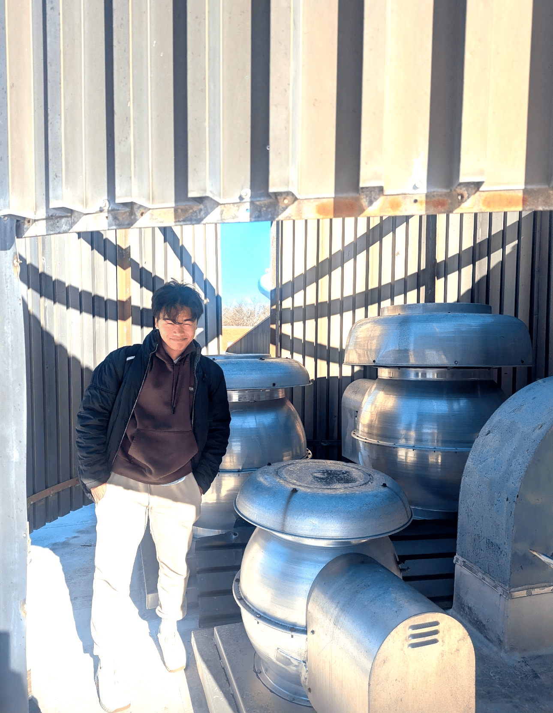

<!-- Image Optimization Guide for khup.org -->

<!-- 
  PERFORMANCE OPTIMIZATION: RESPONSIVE IMAGES
  ==========================================
  
  Modern web performance requires serving appropriately sized images.
  Use this template for all images on the site.
-->

<!-- 
  1. RESPONSIVE IMAGES WITH SRCSET
  Serves different image sizes based on viewport width
  Reduces bandwidth usage on mobile devices
-->

<!-- Avatar Example (aboutme.html) -->
<picture>
  <source 
    type="image/webp"
    srcset="../images/avatar-200.webp 200w,
            ../images/avatar-400.webp 400w,
            ../images/avatar-600.webp 600w"
    sizes="(max-width: 768px) 200px, 400px">
  
</picture>

<!-- 
  2. BLOG POST IMAGES
  For larger content images
-->

<picture>
  <source 
    type="image/webp"
    srcset="../images/tink1-400.webp 400w,
            ../images/tink1-800.webp 800w,
            ../images/tink1-1200.webp 1200w"
    sizes="(max-width: 640px) 400px,
           (max-width: 1024px) 800px,
           1200px">
  
</picture>

<!-- 
  3. IMAGE CONVERSION COMMANDS
  Use these commands to generate optimized image sets
  
  # Install ImageMagick or use online tools like Squoosh
  
  # Create WebP versions (better compression)
  magick convert avatar.png -quality 85 -define webp:method=6 avatar.webp
  
  # Create responsive sizes
  magick convert avatar.png -resize 200x200 avatar-200.png
  magick convert avatar.png -resize 400x400 avatar-400.png
  magick convert avatar.png -resize 600x600 avatar-600.png
  
  # Create WebP responsive sizes
  magick convert avatar-200.png -quality 85 avatar-200.webp
  magick convert avatar-400.png -quality 85 avatar-400.webp
  magick convert avatar-600.png -quality 85 avatar-600.webp
  
  # For blog images (landscape)
  magick convert tink1.png -resize 400x300 tink1-400.png
  magick convert tink1.png -resize 800x600 tink1-800.png
  magick convert tink1.png -resize 1200x900 tink1-1200.png
-->

<!-- 
  4. PERFORMANCE BENEFITS
  
  - WebP: 25-35% smaller than PNG/JPEG
  - Srcset: Serves appropriate size per device (saves 50-70% bandwidth on mobile)
  - Lazy loading: Only loads images when needed
  - Decoding async: Prevents blocking main thread
  - Width/height: Prevents layout shift (better CLS score)
  
  LIGHTHOUSE IMPACT:
  - Performance: +15-30 points
  - Best Practices: +5-10 points
  - Reduces Largest Contentful Paint (LCP)
  - Reduces Cumulative Layout Shift (CLS)
-->

<!-- 
  5. IMPLEMENTATION CHECKLIST
  
  For each image on the site:
  □ Generate WebP version
  □ Create 2-3 responsive sizes
  □ Use <picture> element with <source>
  □ Add width/height attributes
  □ Include loading="lazy" (except above-the-fold images)
  □ Add decoding="async"
  □ Use appropriate alt text
  □ Add fetchpriority="high" for critical images (avatar, hero images)
-->

<!-- 
  6. CSS OPTIMIZATION FOR IMAGES
  Add to your stylesheet:
-->
<style>
/* Prevent layout shift */
img {
  max-width: 100%;
  height: auto;
}

/* Smooth image appearance */
img[loading="lazy"] {
  opacity: 0;
  transition: opacity 0.3s ease-in;
}

img[loading="lazy"].loaded {
  opacity: 1;
}

/* Placeholder blur effect while loading */
.image-placeholder {
  background: linear-gradient(
    90deg,
    #f0f0f0 0%,
    #e0e0e0 50%,
    #f0f0f0 100%
  );
  background-size: 200% 100%;
  animation: shimmer 1.5s infinite;
}

@keyframes shimmer {
  0% { background-position: 200% 0; }
  100% { background-position: -200% 0; }
}
</style>

<!-- 
  7. JAVASCRIPT FOR LAZY LOAD FALLBACK
  Add to performance.js (already created)
-->
<script>
// Add 'loaded' class when image loads
document.querySelectorAll('img[loading="lazy"]').forEach(img => {
  img.addEventListener('load', () => {
    img.classList.add('loaded');
  });
});
</script>
